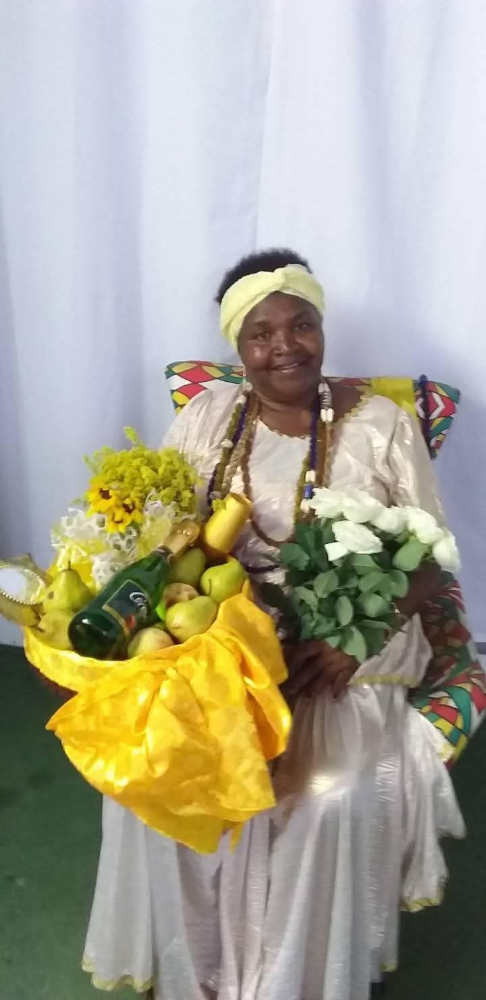

Mãe Rosa de Ogum
Mãe Rosa fundou o Centro Espírita em 2012, dedicando-se há mais de 40 anos à espiritualidade e ao trabalho dentro da Umbanda. Filha de Mãe Oxum e de Pai Ogum — sendo Pai Ogum o Orixá de frente da casa — sua caminhada é marcada pela fé, pela responsabilidade espiritual e pelo compromisso com o bem. O Centro tem como propósito o culto aos Orixás e a propagação da paz, do amor, da esperança e do equilíbrio espiritual. Todos os trabalhos realizados são voltados para a orientação, o fortalecimento da fé e a abertura de caminhos, sempre com respeito às leis espirituais. Não são realizados trabalhos com o objetivo de prejudicar, amarrar, ferir ou causar qualquer mal ao próximo. A casa segue os princípios da Umbanda, que preza pela caridade, pela evolução espiritual e pelo auxílio a quem busca ajuda com sinceridade e respeito.

Horários
- Consultas: Quartas-feiras às 19h
- Sessões: Sábado às 19h duas vezes ao mês.